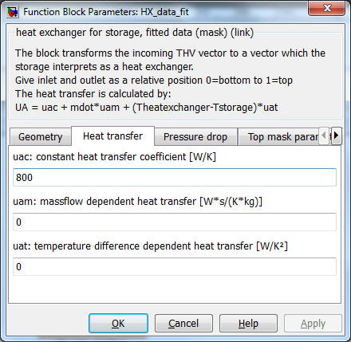

Heat Exchanger Models for Storage_Type_N
Path: CARNOT/Storage/Thermal/Storage_Ports
Purpose:
Heat exchanger models for the thermal storage model
"Storage_Tnode" used in the Storage_Type_N blocks.
Description
The incoming THB is transformed to a vector giving the heating power to each node of the storage.
The relative height of the inlet and outlet are connected to the corresponing nodes
of the storage model.
For example of a model with 10 nodes, the connection is as follows:
| Node |
Relative height inlet or outlet |
| 10 |
> 0.9 |
| 9 |
> 0.8 .. <= 0.9 |
| 8 |
> 0.7 .. <= 0.8 |
| 7 |
> 0.6 .. <= 0.7 |
| 6 |
> 0.5 .. <= 0.6 |
| 5 |
> 0.4 .. <= 0.5 |
| 4 |
> 0.3 .. <= 0.4 |
| 3 |
> 0.2 .. <= 0.3 |
| 2 |
> 0.1 .. <= 0.2 |
| 1 |
<= 0.1 |
The heat exchanger models use the basic block
"sfun_storage_heatexchanger" in
CARNOT\Basic\Thermal_Models. In this block the s-function
"storage_heatexchanger" solves the different
equations for the heat transfer.
Heat transfer calculation
The power of the heat exchange per node is calculated
by the mathematical function derived from
mdot * cp * dThx = U * dA * (Tnode - Thx)
Replace (Tnode-Thx) by teta, than dThx is -dteta
mdot * cp * dteta = - U * dA * teta
dteta / teta = - U * dA / (mdot * cp)
Integrate from inlet position to outlet position.
The equation uses the upwind scheme from Patankar [Patankar 1981]
so the inlet temperature of the heat exchanger node is the
temperature of the node upwards in flow direction.
ln(teta(out)/teta(in)) = -U*A/(mdot*cp)
Exponentiate and solve for teta(out)
teta(out) = teta(in) * exp(-U*A/(mdot*cp))
Replace teta by (Tnode - Thx) and solve for Thx(out), the outlet
temperature of the heat exchanger in one node
Thx(out) = Tnode(out) + ((Thx(in) - Tnode(in)) * exp(-U*A/(mdot*cp))
The power of the node is calculated (Tnode(in) and Tnode(out)
are the same since nodes are fully mixed)
QdotHX(node) = UA*(Thx(in)-Thx(node))
/ log((Thx(in)-Tstore(node)/(Thx(node)-Tstore(node)))
with
The heat transfer calculation is done by an s-function in the underlying model
sfun_storage_heatexchanger.
Stratified Charging
For this stratified charging heat exchanger the heat transfer is set to zero if
the temperature in the storage is above the heat exchanger temperature. If you
specify a inlet above the outlet, the flow in the heat
exchanger is going down in the storage until it reaches a node where the
temperature is lower than the flow temperature. At this node it starts charging
the storage. To model a complete stratified charging heat exchanger, set
inlet-position to 1 and outlet- position to 0.
The ports also model stratified discharging for inlet below outlet. In this
case the port starts discharging the storage if the flow temperature reaches a
node where the temperature is higher.
In case of no mass-flow (Mass-flow smaller than the predefined constant
“NO_MASSFLOW” in carlib.h) the node temperature of the
heat exchanger is set to the node temperature of the storage. The power output
is zero
For undefined heat exchangers (Port_ID not listed below) the model
takes a default value of 500 W/K for the heat transfer.
Input:
Output:
Parameters and Dialog Box
All parameter are non- tunable parameters (values are initialized at
simulation start and cannot change during the simulation).
The heat exchanger model knows different types of heat exchangers.
The type is defined by the PORT_ID (see below)
Parameters HX_tube: Smooth tube heat exchanger (theoretical model)
portID = 201, portID = 301 (stratified charging)
Parameters HX_finned_tube: Finned tube heat exchanger (theoretical model)
portID = 202, portID = 302 (stratified charging)

Heat transfer calculation [Wagner 1991]:
Nu(outside) = 0.5 * (Gr * Pr)^0.25
Nu(inside) = 0.0235*(Re^0.8 - 230)*Pr^0.48
U(outside) = Nu(outside)*condFluid / (Dpipe * PI/2)
U(inside) = Nu(inside)*condFluid / Dpipe
with
The functions Grashof, Prandtl and Reynolds are available in carlib library.
Finned tube additionally have the fin heat transfer [Wagner 1991] which means
a correction of the smooth tube heat transfer:
m = (2*U/(Condwall*Sfin))^0.5
The heat transfer from the pipe is reduced by the place occupied by the fins.
The heat transfer of the fins is added:
U(outside_fin) = U(outside)*(1.0 - Sfin*XNfin) + Sfin*XNfin * m *
condWall*tanh(m*0.5*(Dfin-Dpipe))
For smooth tube heat exchangers this gives:
U(tube) = 1 / (1/U(outside) + Swall/condWall + 1/U(inside))
And for finned tubes the heat transfer is:
U(finnedtube) =
1 / (1/U(outside_fin) + Swall/condWall + 1/U(inside))
For the integral heat transfer the exchanger surface has to be integrated:
UA = U*Ahx
with
Heat exchanger with a heat transfer fitted to measurement
portID = 203, portID = 303 (stratified charging)

Equation for the heat transfer :
UA = UAC + mdot*UAM + (Theatexchanger-Tstorage)*UAT
with
Heat exchanger with a heat transfer from EN 12977 test reports /
TRNSYS Type 340
portID = 204, portID = 304 (stratified charging)
Equation for the heat transfer (from
TRNSYS Type 340 and
ITW Test reports):
UA = UAC * mdot^UAM * ((Theatexchanger+Tstorage)/2)^UAT * abs(Theatexchanger-Tstorage)^UAT2
with
To avoid numerical conflicts the power of the average temperature ((Theatexchanger+Tstorage)/2)^UAT
is only calculated for an average temperature above 1 °C. The result is set to 1 for values below.
S-function sfun_storage_heatexchanger
As mentioned above the heat transfer calculation of the different heat
exchanger models is done in an s-function.
Parameters for the s-function
PORT_ID Heat Exchanger Type
201 : smooth tube heat exchanger theoretical model
301 : smooth tube heat exchanger theoretical model stratified charging
202 : finned tube heat exchanger theoretical model
302 : finned tube heat exchanger theoretical model stratified charging
203 : heat transfer fitted to measurement
303 : heat transfer fitted to measurement model stratified charging
The number of nodes, the start node and the node in the storage must be
known by the model. These values are determined by the general mask for the storage tank
(see Storage_Type_N for details).
The heat transfer is divided by the number of nodes concerned by the heat exchanger. The calculation of the
temperatures and transferred power is done in a loop from inlet node to outlet
node.
NODES : number of nodes in the storage concerned by the heat exchanger
START_NODE : start node of the heat exchanger in the storage
END_NODE : end node of the heat exchanger in the storage
Parameter 1..7 : parameters of the different heat exchanger equations
Verification
Faure: Heat Exchanger EN 12977 Validation, 2012
Literature
ITW Test reports
TRNSYS Type 340, 2006
Drück, Harald : Mathematische Modellierung und experimentelle Prüfung von
Warmwasserspeichern für Solaranlagen, ISBN 978-3-8322-6215-0, Shaker Verlag,
Mai 2007
EN 12977-3: Thermal solar systems and components - Custom built systems -
Part 3: Performance test methods for solar water heater stores; 2018
Wagner: Waermeuebertragung, Vogel-Verlag, 1991
VDI Wärmeatlas, VDI Verlag 2008
Patankar: Numerical Heat Transfer and Fluid Flow, 1981
Characteristics:
| Direct Feedthrough |
: |
Yes |
| Sample Time |
: |
Inherited from driving block |
| States |
: |
None |
| Vectorized |
: |
No |